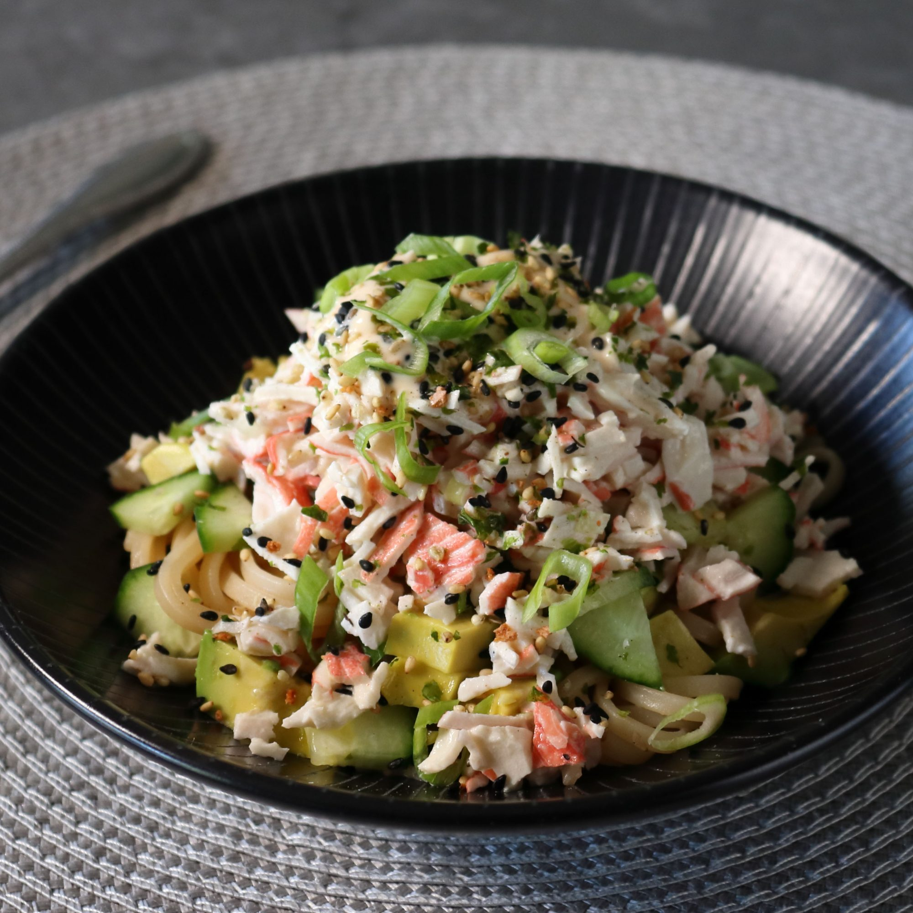

California Roll Rice Noodle Bowl

We're turning America's favorite sushi roll into a bowl, but instead of sushi rice, we're using rice noodles.
Unlike actual California rolls, this cold, refreshing, delicious dish requires no skill or experience.
Plus, we can use this exact same method to turn any of our other favorite sushi rolls into a rice noodle bowl.
Ingredients
For the Sushi Mayo Dressing Base:
⅔ cup mayonnaise
1 tablespoon seasoned rice vinegar
1 teaspoon Dijon mustard
½ teaspoon Sriracha
For the Bowl:
6 ounces imitation crabmeat, chopped
¼ cup sliced green onions
½ teaspoon wasabi paste, or to taste
2 tablespoons prepared mayo dressing base
4 ounces dried rice noodles
1 avocado - peeled, pitted, and cubed
½ cup sliced English cucumber
2 tablespoons furikake (Japanese nori seasoning), or to taste
1 teaspoon sliced green onions, or to taste
For the Noodle Dressing:
2 tablespoons prepared mayo dressing base
¼ cup seasoned rice vinegar
2 tablespoons soy sauce
½ teaspoon sesame oil
½ teaspoon wasabi paste, or to taste
Step by step cooking:
- Step 1:
Combine mayonnaise, rice vinegar, mustard, and Sriracha in a bowl with a whisk.
Taste and adjust as needed. Chill in the refrigerator until ready to use.
- Step 2:
Combine chopped imitation crab, green onions, wasabi paste, and 2 tablespoons of our prepared mayo dressing base in another bowl.
Refrigerate until needed.
- Step 3:
Bring a pot of lightly salted water to a boil; reserve a bowl of ice water nearby to add cooked noodles to after boiling.
Stir noodles into the boiling water and cook until just tender, about 5 minutes.
Drain and transfer to cold water to stop the cooking process.
- Step 4:
Combine 2 tablespoons prepared mayo dressing base, seasoned rice vinegar, soy sauce, sesame oil,
and wasabi paste for noodle dressing in a bowl with a whisk. Drain noodles and toss in sauce until evenly coated.
- Step 5:
CWrap in plastic wrap and chill for 1 to 2 hours, tossing occasionally.
- Step 6:
Unwrap noodles and transfer to a serving bowl. Top with avocado, cucumber, and crab mixture;
drizzle with more mayo sauce and garnish with furikake.